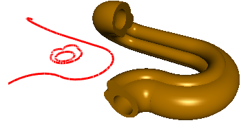

Pipe-like solids.
Let's create a pipe-like solid with a contour-clip, round hole and contour-profile consitsing of arcs and line segments.
This code creates a contour-clip and a round hole:
sgCObject* objcts[7];
SG_POINT ArP1;
SG_POINT ArP2;
SG_POINT ArP3;
SG_ARC ArcGeo;
ArP1.x = -0.2; ArP1.y = -0.2; ArP1.z = 0.0;
ArP2.x = -0.1; ArP2.y = 0.2; ArP2.z = 0.0;
ArP3.x = -0.3; ArP3.y = 0.1; ArP3.z = 0.0;
ArcGeo.FromTreePoints(ArP1,ArP2,ArP3,false);
objcts[0] = sgCreateArc(ArcGeo);
ArP1.x = -0.1; ArP1.y = 0.2; ArP1.z = 0.0;
ArP2.x = 0.3; ArP2.y = 0.5; ArP2.z = 0.0;
ArP3.x = 0.2; ArP3.y = 0.6; ArP3.z = 0.0;
ArcGeo.FromTreePoints(ArP1,ArP2,ArP3,false);
objcts[1] = sgCreateArc(ArcGeo);
ArP1.x = 0.3; ArP1.y = 0.5; ArP1.z = 0.0;
ArP2.x = -0.2; ArP2.y = -0.2; ArP2.z = 0.0;
ArP3.x = 0.6; ArP3.y = -0.4; ArP3.z = 0.0;
ArcGeo.FromTreePoints(ArP1,ArP2,ArP3,false);
objcts[2] = sgCreateArc(ArcGeo);
sgCContour* cnt2 = sgCContour::CreateContour(objcts,3);
sgGetScene()->AttachObject(cnt2);
cnt2->SetAttribute(SG_OA_COLOR,12);
cnt2->SetAttribute(SG_OA_LINE_THICKNESS, 2);
SG_CIRCLE cirGeo;
SG_POINT cirC = {0.3, -0.1, 0.0};
SG_VECTOR cirNor = {0.0, 0.0, 1.0};
cirGeo.FromCenterRadiusNormal(cirC,0.31, cirNor);
sgC2DObject* cir = sgCreateCircle(cirGeo);
sgGetScene()->AttachObject(cir);
cir->SetAttribute(SG_OA_COLOR,12);
cir->SetAttribute(SG_OA_LINE_THICKNESS, 2);
Now let's create a contour-profile consisting of 1 line segment and 4 arcs:
ArP1.x = 0.0; ArP1.y = -2.0; ArP1.z = 0.0;
ArP2.x = 1.0; ArP2.y = -1.0; ArP2.z = 0.0;
ArP3.x = 0.4; ArP3.y = -1.2; ArP3.z = 0.0;
ArcGeo.FromTreePoints(ArP1,ArP2,ArP3,false);
objcts[0] = sgCreateArc(ArcGeo);
ArP1.x = 1.0; ArP1.y = -1.0; ArP1.z = 0.0;
ArP2.x = 2.0; ArP2.y = 0.0; ArP2.z = 0.0;
ArP3.x = 1.9; ArP3.y = -0.5; ArP3.z = 0.0;
ArcGeo.FromTreePoints(ArP1,ArP2,ArP3,false);
objcts[1] = sgCreateArc(ArcGeo);
ArP1.x = 2.0; ArP1.y = 0.0; ArP1.z = 0.0;
ArP2.x = 1.0; ArP2.y = 1.0; ArP2.z = 0.0;
ArP3.x = 1.6; ArP3.y = 0.8; ArP3.z = 0.0;
ArcGeo.FromTreePoints(ArP1,ArP2,ArP3,false);
objcts[2] = sgCreateArc(ArcGeo);
objcts[3] = sgCreateLine(1.0, 1.0, 0.0, -1.0, 1.0, 0.0);
ArP1.x = -1.0; ArP1.y = 1.0; ArP1.z = 0.0;
ArP2.x = -1.0; ArP2.y = 0.0; ArP2.z = 1.0;
ArP3.x = -1.1; ArP3.y = 1.0; ArP3.z = 0.0;
ArcGeo.FromTreePoints(ArP1,ArP2,ArP3,false);
objcts[4] = sgCreateArc(ArcGeo);
sgCContour* cnt1 = sgCContour::CreateContour(objcts,5);
sgGetScene()->AttachObject(cnt1);
cnt1->SetAttribute(SG_OA_COLOR,12);
cnt1->SetAttribute(SG_OA_LINE_THICKNESS, 2);
Further you must define both a point in the arc-clip plane which will move along the profile, and a rotation angle around this point. Let this point be (0, 0, 0) and the rotation angle 0 degrees. Let's build a surface:
SG_POINT point_in_plane = {0.0,0.0,0.0};
bool close = true;
sgC3DObject* pipO = (sgC3DObject*)sgKinematic::Pipe((const sgC2DObject&)(*cnt2),
(const sgC2DObject**)(&cir),1,
(const sgC2DObject&)(*cnt1), point_in_plane, 0.0, close);
sgGetScene()->AttachObject(pipO);
pipO->SetAttribute(SG_OA_COLOR,25);
Then let's move the obtained surface:
SG_VECTOR transV1 = {3.0,1.0,0};
pipO->InitTempMatrix()->Translate(transV1);
pipO->ApplyTempMatrix();
pipO->DestroyTempMatrix();
See also:
sgCContour sgCContour::CreateContour
sgGetScene sgCScene::AttachObject sgCObject::SetAttribute
Illustration:
